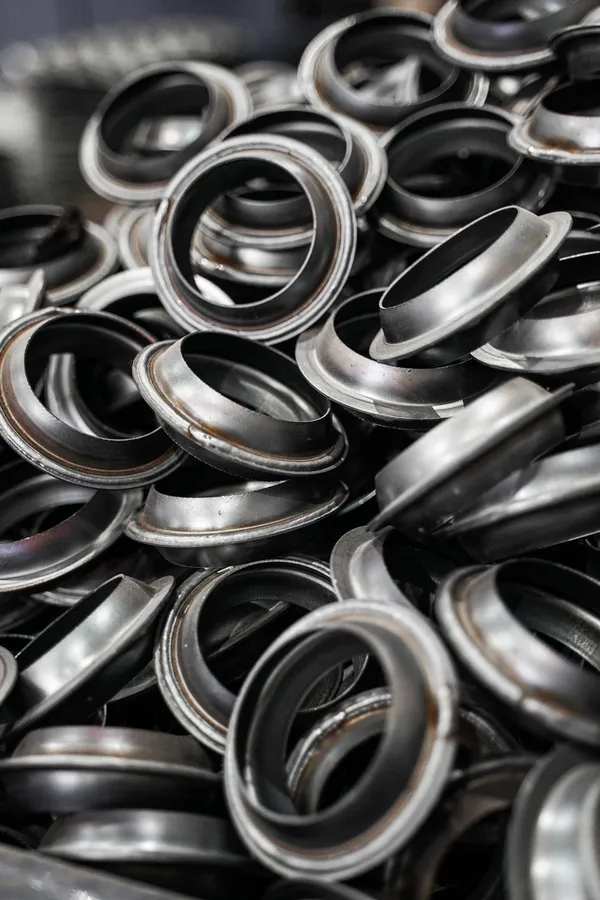
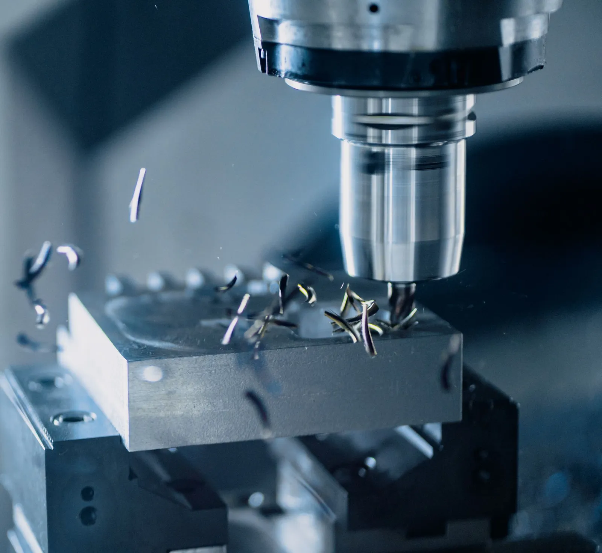
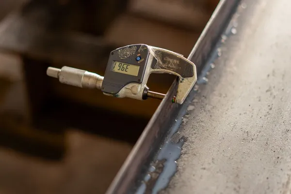
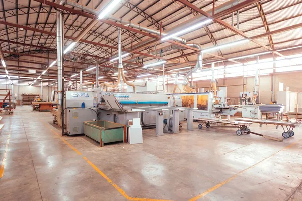
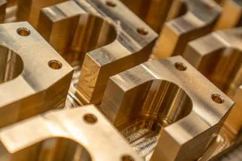
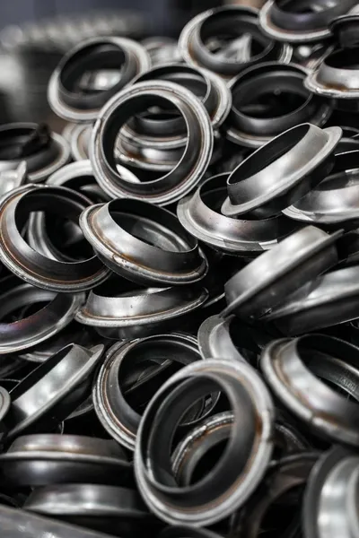
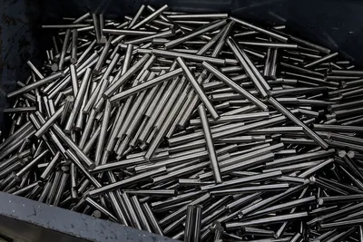
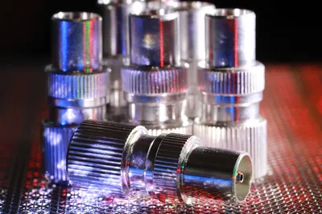
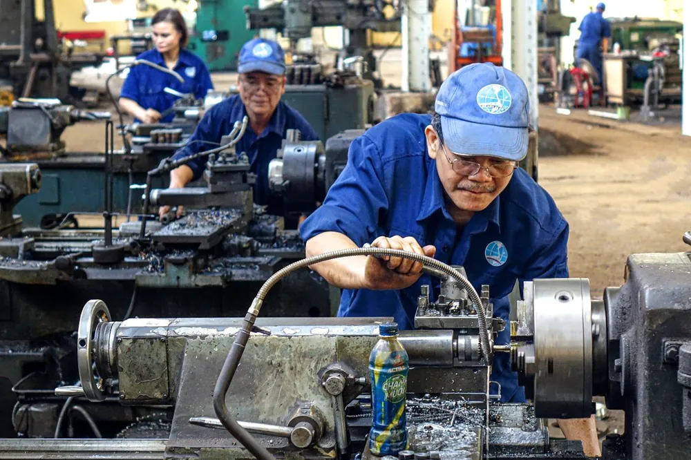

試作1個から、量産まで一貫対応
試作で決めた加工条件をそのまま量産へ引き継ぐので、品質がぶれません。数個の特急品から数千個のロットまで、同じ窓口で承ります。

About us
私たちは創業以来、金属部品の切削加工ひとすじに歩んできました。図面に書かれた寸法の先にある「なぜこの形なのか」を考え、加工方法や材質のご提案まで。小さな町工場だからこそできる、きめ細かなものづくりを続けています。
会社案内を見るStrength

試作で決めた加工条件をそのまま量産へ引き継ぐので、品質がぶれません。数個の特急品から数千個のロットまで、同じ窓口で承ります。

温度管理された検査室と三次元測定機で、図面の公差どおりかを確かめてから出荷します。検査成績書の添付にも対応します。

材料の在庫と段取りの標準化で、急ぎの試作にも対応します。納期のご相談は、お電話でもお気軽にどうぞ。
Works




Facility
